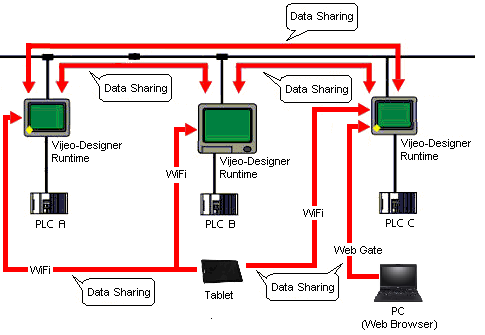

|
|
|
|
|
|
|
|
You can share variables and alarms between tablets, smartphones, target machines and a Web Gate Client. This process of reading from and writing to variables and alarms from other target machines on the network is called Data Sharing.
One of the benefits of Data Sharing is that you can expose PLC register values to other PLCs that could not otherwise view the data. Another benefit is you can view and acknowledge alarms occurring on another target machine. For more information on Alarm and Event Data Sharing, see Section 16.3.1.4, Remote Categories.
Data Sharing enables you to share data between target machines, between target machines and tablets/smartphones, and between targets and a Web Gate client. Each target machine has a set of variables. Other target machines, tablets/smartphones, and a Web Gate client can access these variables and alarms at run time, as long as they reside on the same network and are set up to share their data.
For example, in the diagram below, Data Sharing makes it possible for:
PLC A to view PLC B's register values
The Tablet to present variables and alarms from any target machine
Web Gate to view data available on a single target machine


If PLC A, B, and C (see above) are from different manufacturers, Data Sharing might be the only way for the PLCs to view register values on other PLCs.
If using a target machine with two network cards, only one of the cards can be used with Data Sharing. The IP address is configured in the Target properties. For more information, see Section 4.5.1, Target Properties.
The number of alarms you can share are limited. See Appendix 4 Runtime Specifications for the maximum number of remote categories each target can have.
Both the number of variables you can share and the number of targets you can share the variables with are limited. See Appendix 4 Runtime Specifications for the recommended maximum number of variables each target should share.
The number of target machines that one target can connect to at a time is described in Appendix 4 Runtime Specifications.

Connections may be rejected if you exceed the recommended maximum, as the target machine runs out of communication ports.
Remote access to targets using the features above can impact the target's performance. Take care to consider the recommendations and limitations specified in Appendix 4 Runtime Specifications when working remotely with target machines.